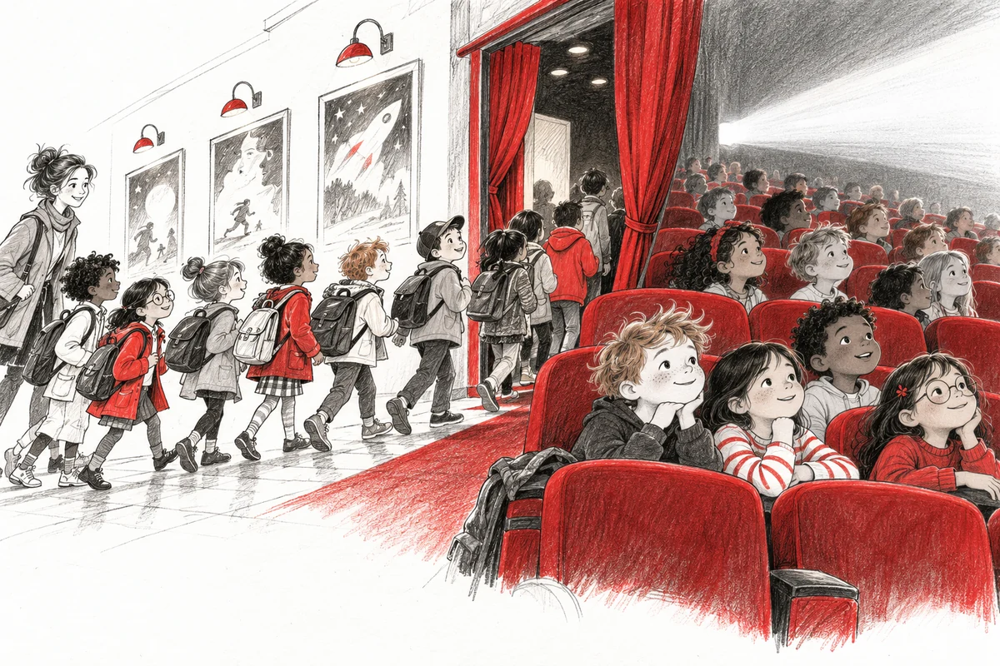

Tout au long de l’année, Ciné Carbonne accueille les classes de Carbonne et des communes voisines pour leur faire découvrir le cinéma. En 2025‑2026, 58 séances — de la petite section à la 3e — ont représenté plus de 5 000 entrées, une fréquentation toujours en hausse. Les dispositifs Maternelle au cinéma, École et cinéma et Collège au cinéma, ainsi que la filmothèque de Cinéfol31, permettent de choisir à tarif attractif des films d’animation, de fiction ou des documentaires. À partir du collège, le pass Culture facilite aussi l’accès au cinéma, en groupe ou individuellement. Les enseignants peuvent sélectionner un titre ci-dessous et contacter le cinéma pour organiser une projection adaptée à leur classe.
Chargement des films…